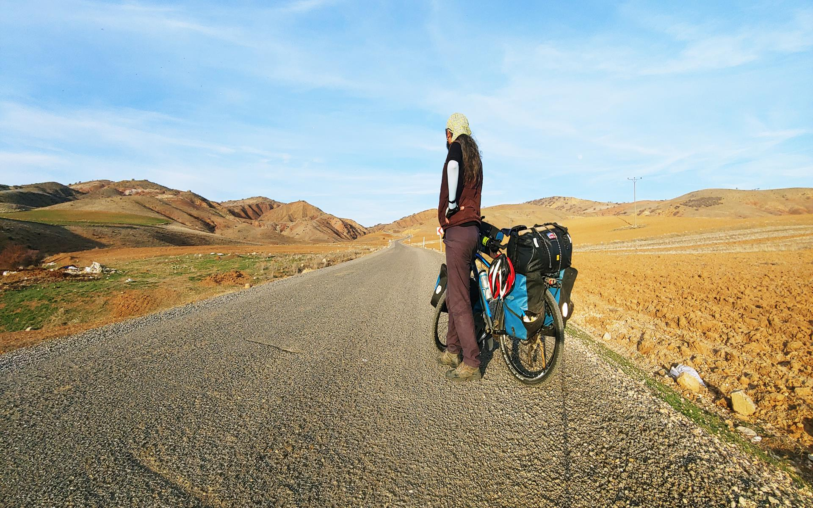

Adı yalnızlığından gelen kahraman
15 yılı aşkın süredir coğrafyanın kılcal damarlarını iki teker üzerinde pedallayan bağımsız bir "avare" ve dijital yol anlatıcısıyım. Hazır şablonları reddederek, modern dünyanın dayattığı tüketim çılgınlığına karşı az donanımlarla "Aykırı Yollarda" ham gerçekliğin izini sürüyorum.
İletişimModern dijital dünyanın dayattığı algoritmik kalıplara, hız tüketimine ve "sayısallaştırılmış" başarı kriterlerine meydan okuyan, kendi deyimimle "avare" bir bisikletçi, özgür bir yol anlatıcısıyım.
Yolları kilometre taşlarıyla veya hız göstergeleriyle değil; arkamda bıraktığı hikayelerle, dokunduğum hayatlarla ve coğrafyanın ruhuyla ölçerim. Popüler kültürün "influencer" veya standart "içerik üreticisi" tanımlarını reddederek, dijital dünyanın bir "ırgatı" olmayı değil, yaratıcı özerkliğini korumayı seçmiş bir modern zaman seyyahıyım.
Benin için bisiklet, sadece bir ulaşım aracı değil; bağımsızlığın, sadeliğin ve doğayla kurulan sansürsüz bir bağın sembolüdür. Genellikle dağ bisikleti (MTB) tercihlerimle bilinen bu yolculuk tarzım, dayanıklılığı ve her türlü araziye uyum sağlamayı esas alır.
Seyahat felsefesimde "görünmezlik" ve "hamlık" ön plandadır. Popüler rotaları tüketmek yerine, Anadolu'nun derinliklerine, unutulmuş patikalara ve kalıpların ötesindeki topraklara yönelirim. Rotanın detaylarını (GPX verilerini) paylaşmayı veya yolculuğu mekanik bir veriye dönüştürmeyi reddediyorum; çünkü bana göre yol, sadece gidilerek ve hissedilerek keşfedilmesi gereken kişisel bir deneyimdir.
Bisiklet bir statü göstergesi, fetiş objesi ya da vites sayısıyla övünülecek bir tüketim ürünü değildir. O, yalnızca doğaya, tarihe ve insana ulaşmayı sağlayan en saf, en mütevazı ulaşım aracıdır. Amacın kendisi değil, bağımsızlığın ve sadeliğin sembolü olan bir yol arkadaşıdır.
Sırf yenisi çıktı diye ekipman değiştirmeyi ve bisiklet endüstrisinin kölesi olmayı reddeder. Bu felsefede esas olan sürdürülebilirlik ve emektir; arızalanan bagaj kaynak yapılır, yamalanan lastiğe güvenilir. Zorlu arazilere meydan okuyan dağ bisikleti (MTB) tercihi de bu dayanıklılık ve sadelik anlayışının bir parçasıdır.
Konforlu asfalt yollar insanı uyuşturur; gerçek keşif ise konfor alanının bittiği yerde başlar. Haritaların bile göstermediği patikalar, stabilizesi yüksek zorlu dağ geçitleri ve unutulmuş rotalar tercih edilerek hem fiziksel hem de zihinsel olarak kalıpların dışına çıkılır.
YouTube algoritmalarının, yapay etkileşim şablonlarının, beğeni veya izlenme kaygılarının boyunduruğu altına girmeyi reddeder. İçerikler popüler kültür malzemesi olarak değil; yolun tarihini, insanını ve o derin sessizliğini olduğu gibi geleceğe aktaran ham, sansürsüz birer dijital belge ve arşiv olarak üretilir.
Yolculuğun kişisel ve ruhsal bir deneyim olduğuna inanılır. Rotanın milimetrik detaylarını (GPX verilerini) paylaşarak yolculuğu mekanik, dijital bir tüketim verisine dönüştürmeye karşı çıkar. Çünkü yol, bir başkasının çizdiği sanal çizgilerden değil; bizzat gidilerek ve hissedilerek keşfedilmesi gereken canlı bir süreçtir.
Popüler ve turistik rotaları hızlıca tüketmek yerine, seyahatte "görünmezlik" ve "hamlık" felsefesiyle hareket edilir. Amaç, vitrinde olanı değil; Anadolu'nun derinliklerinde gizlenmiş, saklı kalmış toprakları ve o toprakların unuttuğumuz gerçek insani bağlarını sansürsüzce solumaktır.
Yüzümü sansürlemem tamamen kişisel bir tercih. Ülkemizde yüzsüzleri daha çok seviyor, baş üstünde tutuyorlar; belki de ben bu yüzden böyle yapıyorum. Şaka bir yana, süper kahramanların da maskeleri olur sonuçta! Ya da belki ajanlık kariyerim tehlikeye giriyor, kim bilir?
Gerçek sebebe gelirsek; insanlar, tanınan ve tanınmayan kişilere farklı yaklaşıyor. Tanınan biri olduğunda, 'Ferdimen gelmiş, hadi fotoğraf çekelim, video çekelim!' diye sosyal medyada etkileşim peşinde koşanlarla karşılaşıyorsun. Oysa tanımadıkları biri olarak karşılarına çıktığımda, daha sıradan ve samimi bir iletişim kurabiliyorsun. Beni tanımayan biriyle doğal bir sohbet etmek, samimi bir paylaşımda bulunmak bana daha çok keyif veriyor. İşte bu yüzden yolculuklarıma maskeli süper kahraman modunda devam ediyorum!
Ama bir not düşeyim: Yüzümü sadece herkese açık videolarda gizliyorum. Ancak Katıl üzerinden üye olan takipçilerim için yayınladığım özel videolarda böyle bir gizleme söz konusu değil. Orada süper kahraman maskesi çıkıyor, çok daha içten ve açık bir iletişim kurabiliyoruz.
Adım Ferdi, ancak çoğu insan beni "Ferdimen" olarak tanır. Bir gün bir arkadaşım, benim her zorlukla başa çıkabilme yeteneğimi "Süpermen" olarak tanımlamıştı. O esnada başka bir arkadaşım, bu benzetmeyi biraz mizahi bir şekilde düzelterek "Ferdimen" demişti. O günden sonra, bu takma ad benimle özdeşleşti.
"Ferdimen" ismi, yalnızca bir takma ad değil, aynı zamanda kişiliğimi yansıtan bir sembol haline geldi. Yola çıktığımda, karşılaştığım zorlukları hemen çözme becerim ve pratikliğimle tanınıyorum. Bisikletle yolculuk yaparken, karşımda bir engel olsa bile hemen bir çözüm üretirim. Ancak bu beceri, sadece bisiklet yolculuklarımla sınırlı değil. Hayatımın her alanında, sorunlarla başa çıkmak için pratik bir yaklaşım geliştiririm.
Yalnızlık da benim için bir özelliktir. Kendi başıma yola çıkarken, yardım almak yerine kendime güvenerek hareket ederim. Çoğu zaman, yanımda kimse olmadan sorunların üstesinden gelirken, yalnızlık aslında bana güç verir. "Ferdimen" ismi, yalnız başıma yol aldığımda, kendi iç gücümü ve becerilerimi hatırlatan bir hatırlatıcı haline geldi. Çünkü her ne olursa olsun, yalnızlıkla da olsa her zorluğu aşabileceğimi biliyorum.
Açık konuşmak gerekirse, artık rota paylaşmıyorum; mayın eşekliğini bıraktım. Önceden hevesle her rotayı açık açık paylaşıyordum ama zamanla bazı yerlerin çok hızlı tüketildiğini, doğallığın zarar gördüğünü ve bazı rotaların herkes için uygun olmadığını fark ettim.
Geçmişte rotaları ve kamp alanlarını paylaşmış olsam da, zamanla bu durum bazı istenmeyen sonuçlara yol açtı. Özellikle kamp kurduğum bazı noktalarda, bu lokasyonlara, Wikiloc gibi platformlardan rotayı indirip gelen kişilerin benimle aynı hassasiyetleri taşımadığını, doğaya zarar verdiklerini ya da yöre halkıyla sağlıklı bir iletişim kuramadıklarını gördüm. Hatta bazıları “Ferdimen gönderdi” diyerek tanıdıklarımı suistimal etme gibi olumsuz davranışlarıyla karşılaşıldı. Bu durum hem beni hem de o bölgelerdeki dostlarımı zor durumda bıraktı. Tanıdığım insanların “Ne biçim insanlar gönderiyorsun?” gibi serzenişlerine yol açtı.
Bu tür olaylar hem beni, hem de beni gönülden destekleyen yerel dostlarımı rahatsız etti. Ben bir yerle bağ kurarak, saygıyla yaklaşarak ilerliyorum ama rota üzerinden gelen herkes aynı yaklaşımı göstermiyor. Bu yüzden artık rotalarımı herkese açık şekilde paylaşmıyorum.
Bunun yerine, kendi internet sitemde YouTube destekçilerime özel erişim imkânı sağlıyorum. Hem bu sayede gelen kişilerin gerçekten ilgili, duyarlı ve sorumluluk sahibi olması sağlanıyor, hem de doğayı ve ilişki kurduğum yerel insanları koruyabiliyorum. Hem de emeğimin karşılığı bir nebze korunmuş oluyor ve katkı sunan takipçilerime özel bir ayrıcalık sunabiliyorum.
Bu karar tamamen bireysel bir tercih değil, yaşanan tecrübelerden doğan bir gerekliliktir. Anlayışınız için teşekkür ederim.
Doğru görmüşsün; sosyal medya çöplüğünde vitrin mankeni olmuyorum. İnstagram, Facebook, WhatsApp da yok, çünkü Mark Zuckerberg gibi yavşak teknofeodal lordların evreninde teşhirde durmak bana göre değil. Gerçekten önemli bir şey söylemek istiyorsan İletişim bölümünden ulaşabilirsin. Önemsiz şeyler içinse hiç zahmet etme. Her mesaja cevap vereceğimin garantisi yok. Ben istemedikçe kimse benimle iletişime geçemez.
Asfalt konforu ve ana yollar insanı uyuşturur, coğrafyanın gerçek dokusundan uzaklaştırır. Haritaların göstermediği patikalarda, yüksek irtifalı dağ geçitlerinde ve stabilize köy yollarında medeniyetin yapaylığından uzak, saf ve gerçek bir yaşam mücadelesi vardır.
Turlarımda lüks ve en son model Ekipmanlar yerine; işlevsel, yıllarca test edilmiş ve onarılabilir donanımları tercih ederim. Kırılan bir arka bagajı yenisiyle değiştirmek yerine sanayide kaynak yaptırmayı, delinen heybeyi yamamayı seçerim.
Gelecekteki olası bir trafik cinayetinde, pusuya yatmış sözde duyarlı bisiklet derneklerinin/kulüplerinin acı üzerinden PR yaparken logo yerleştirmekle vakit kaybetmemesi için hazırlanmış resmi, açık kaynaklı protesto alanıdır.

Bir gün trafikte bir maganda yüzünden hayatımı kaybedersem, arkamdan samimi bir yas tutmak yerine bunu bir 'etkileşim fırsatı' olarak görecek kurumlar için kurallar basittir:
"Ölümümün, kurumsal görünürlüğünüze ve sponsorluk dosyalarınıza katkı sağlamasını temenni ederim."
Aykırı Yollarda sürdürülen bu bağımsız seyahat felsefesine, reklamsız dijital arşiv çalışmalarına ve bağımsız içerik üretimine katkıda bulunmak isterseniz aşağıdaki kanallardan destek olabilirsiniz.
Yol hikayelerini, bağımsız yayınları ve anlık telemetri paylaşımlarını resmi ağ istasyonları üzerinden takip edebilirsiniz.